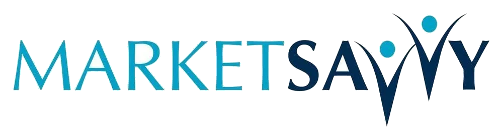
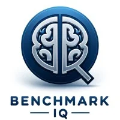
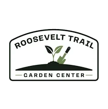
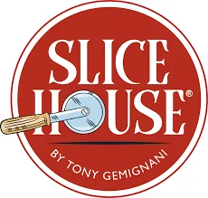
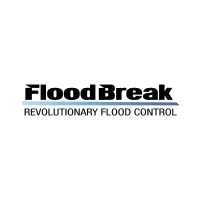
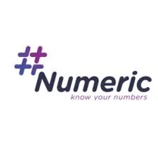

What our clients say, and what actually happened.
These are the teams that stopped doing it by hand. The automations we built, what changed, and what they said about it.

Offerpad needed AI tools for their sales team and automation for back-office work that was eating hours of manual time across multiple departments. We built a suite of custom AI tools scoped to how their teams actually worked, iterated as their needs changed, and maintained what we built so it kept running.
TEG has been a great AI partner for us. They helped us build a suite of AI tools for our sales team and develop back-office automations that eliminated hours of manual work. They've worked across multiple teams and delivered consistently. They know how to scope, build, and iterate without a lot of hand-holding.- Chris Carpenter, COO · Offerpad

Biproxi's investor relations team was spending hours manually researching family offices, finding the right contact within complex corporate structures, and pulling outreach angles, all before writing a single email. We built a Claude skill that lives inside their existing Claude account: type a firm name, and the tool runs the full research and contact-finding workflow automatically, producing an investor briefing and a suggested outreach draft. Then we connected Claude to their investor spreadsheet so data logs and updates automatically.
Conor and Maria have been an absolute pleasure to work with. From our first conversation, Conor took the time to understand our business, the challenges we were trying to solve, and how custom Claude skills could help streamline our workflows. He came back with thoughtful, tailored solutions that directly addressed our needs and executed everything quickly and flawlessly. The entire process was collaborative, efficient, and exceeded our expectations. We look forward to working with the Endurance team again and would highly recommend them to anyone looking to build practical, high-impact AI solutions for their business.- Gieriet Bowen, Director of Investor Relations · Biproxi Capital Network

Realty ONE Group's sales team was running on multiple disconnected systems, data silos, inconsistent CRM adoption, and no clear view of the pipeline. We came in, migrated everything into HubSpot, built custom workflows that eliminated manual work, created dashboards that gave leadership a real view of sales performance, and implemented a LinkedIn outreach strategy built on shared connections and common backgrounds.
The result: a sales team that works smarter, leadership that can actually see what's happening, and an outreach motion that became a core part of their prospecting strategy.
Working with The Endurance Group on our HubSpot implementation was absolutely amazing. They introduced a new LinkedIn outreach solution that has been a fantastic addition to our prospecting strategy. TEG totally exceeded our expectations.- Sevag Sarkissian, VP Growth Marketing · Realty ONE Group

FenestraPro had a list of target firms they'd been trying to reach for years with no traction. We mapped the shared history between their team and those target firms, found the warm paths in, and ran an outreach motion built on those real connections.
Average response rate: 30%. Real conversations opened with firms that had been unreachable through conventional outreach.
The Endurance Group's strategy of using shared experiences to establish connections and book meetings with prospects has worked incredibly well. Their efforts have resulted in an average 30% response rate and started conversations with key firms that we'd been interested in pursuing for years.- David Palmer, CEO & Founder · FenestraPro

Huron's team wanted to grow their network in a way that felt authentic rather than another round of cold outreach. We ran relationship expansion campaigns that connected their people with prospects who shared real, specific backgrounds with them, turning cold contacts into known entities.
TEG's relationship expansion campaigns are well-named. By connecting with prospects who you share backgrounds with, you are able to develop authentic connections and become a known entity. You build your brand and network among individuals who may look to you in the near future for your perspective or when they have business needs aligned to your areas of expertise.- Ben Chrischelles, Senior Director · Huron

Home Impact Partners was building Impact Atlas, a platform at the intersection of real estate and AI. They needed a partner who could execute on specs but also think strategically about product direction. We built alongside the team, helping shape the product and bringing their vision to life.
The Endurance Group helped us bring my platform, Impact Atlas, to life. They don't just execute on specs; they think alongside you and help shape the product. If you're working at the intersection of real estate and AI, TEG is the team to call.- Vin Ferrara, Founder · Home Impact Partners

Edify had grown entirely through referrals but had no consistent pipeline. We built the sales infrastructure, generated leads, created content, and executed outreach that resulted in long-term client relationships worth hundreds of thousands of dollars. Edify has since grown to 60 full-time employees.
Over the course of several years, our work with The Endurance Group has been instrumental in gaining valuable insights about our market space and establishing connections with the right individuals and organizations, ultimately leading to new long-term client relationships.- Federico Hess, Partner & CEO · Edify Software

Megan Walker needed an AI that could create compliant, personalized marketing content for healthcare clients at scale, social media calendars, blogs, and ebooks, without violating strict medical ethics codes. We built it, and helped her think through the business model around it.
TEG has helped us create a high-powered, unique and time-saving tool for our health and medical clients worldwide. With HealthPost Genius, practices can create a month's worth of compliant social media posts in minutes.- Megan Walker, Founder · Market Savvy

Michael Gazzano wanted an AI that functioned like a CPA down the hall, able to answer complex tax questions accurately without hallucinating. We built it, trained it on the tax code, tested it against real scenarios, and made accuracy the non-negotiable standard.
The Endurance Group was instrumental in helping me create an AI that knows the US tax code inside and out. Thanks to TEG, we now have a powerful tool that enhances our service offerings and a clear strategy for growth.- Michael Gazzano, CEO · Benchmark Human Capital

The College of Staten Island team secured 30 career mentors in two months. The CCNY team received 88 responses from targeted alumni in two weeks. Both using our social capital outreach approach applied to alumni engagement.
The Endurance Group has really helped our organization reach many new individuals and make new connections. Their services have been exemplary.- Kathleen Mone, Business Manager for University Advancement · CUNY

The United Way was struggling to keep up with grant opportunities manually. We built a custom AI that identified relevant grants, drafted application responses based on their existing materials, and tailored each submission to the specific requirements of each funder.
The Endurance Group helped us create an AI that allowed us to apply for grants much more efficiently than before. Their expertise and innovative approach have streamlined our grant application, saving us invaluable time and resources.- Trish Tomlinson, Board Member · United Way of Western Connecticut
More from our clients

The Endurance Group's efforts to expand our business through networking with like-minded health and safety leaders have helped SaltGrid develop new business relationships across the globe.- Chris Aitken, CEO, SaltGrid

TEG found and landed the meeting that turned into our largest client. I recommend TEG without reservation.- Michael Prevost, CEO, VividCloud

Their lead generation and business development strategies resulted in measurable connections made and new projects for our firm.- Jay Connolly, President, Connolly Brothers

The team's expertise and insight into how social capital works were so valuable for our company and had a very high return on investment.- Kevin Finn, CEO, Mutual Capital Analytics

Working with TEG was a 10 out of 10. They were able to fix some glitches on our website and incorporate a personal AI assistant to help answer customers questions. Often times landscape customers have questions that can now get answered in real time using the AI assistant so I can focus on growing and running the business.- TJ Doherty, President, Roosevelt Trail Garden Center
The team at TEG was great to work with. ... He was a great partner, very service oriented, and always seeking to make our interactions both efficient and valuable.- Geoff Amidei, Director, Collective Next
The Endurance Group is exactly the kind of agency partner you hope to find. We brought them in for LinkedIn campaign strategies, and the experience was an absolute standout from start to finish. They didn't just listen, they elevated.- Nancy Sarpa-Samuelson, Senior Marketing Manager, Palo Alto University
Our clients






Ready to be the next one on this page?
Every engagement starts with a call. We'll learn where your team is with Claude and tell you honestly what would make the biggest difference.